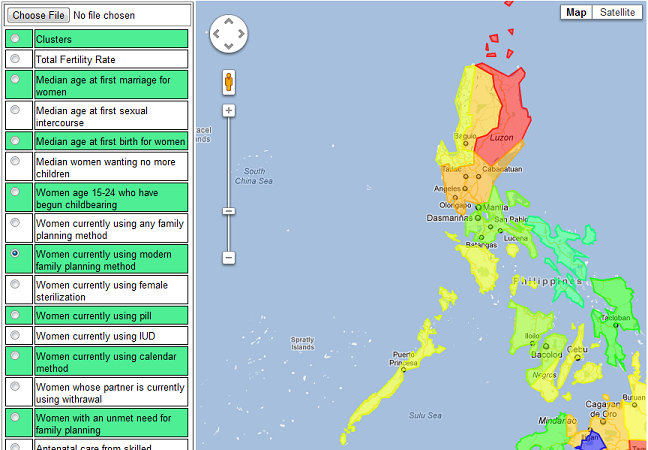

Getting Started
The Input Panel
The Result Panel
The Console Panel
The GIS Visualizer
|
Getting Started
To start using SOM Visualize, the User must create
a new file using the New File Icon or New File Menu Item.
This should create an instance of the file and the user may start on
using the entirety of the program.
The Input Panel
Using SOM Visualize is basically simple. Just supply the program
with all the inputs needed and you're good to go. The input panel has several
sub-panels. The Input Data Subpanel, the SOM Parameters, U-matrix, Clusters,
Component Planes, and GIS. Each subpanel asks for specific inputs which are needed
to carry out its process. The input panel looks like this.
The first thing to do is give the tool an input data, you may do so in two ways.
First, you may import an excel file (.xls or .csv) into the tool by using the browse [...] button
beside the Input File text field. This should give you a File Chooser for you to locate your
file. The Second way is by using the Input Facility Provided by the tool. This should be easy.
All you have to do is add rows and columns and then input your data.
Take note, the tool expects a specific data layout for it to function properly.
In excel files, the first row should act as headers for the variables, while the first column is for
the data labels. Also, take note that the upper-left cell (A,1) will be ignored by the tool. The next figures show
the appearance of importing and the input facility respectively.
Once done with an input, the next thing to do is give the Map its parameters where
it would train on. Parameters include Map Width, Map Height, Initial Learning Rate,
Final Learning Rate(optional), Iterations, Learning Rate Function, Neighborhood Function, and
Node Influence Function. Let us define each parameter:
1.) Map Width = the number of nodes per row, this should affect the appearance of your map.
2.) Map Height = the number of nodes per column, this should affect the appearance of your map.
3.) Initial Learning Rate = the initial value at which your tool should try to change the values near it.
Note that, over time this would eventually reach the value of 0. Range is from 0-1.
4.) Final Learning Rate = if in case you would not want the final learning rate to be 0, you may use this to change it.
5.) Learning Rate Function = this tool has a default learning rate function which is the exponential and power series. Power series
enables you to use final learning rate while the other does not. Choose whichever you like better.
6.) Neighborhood Function = this tool has only one default neighborhood function, which is, the exponential function that decreases
the size of the neighborhood of one node per iteration exponentially.
7.) Node Influence Function = this tool has only one default node influence function, which is gaussian. This bell shaped function tells us
that a chosen node changes the values of its neighbors differently depending on their distance. The nearer the larger the effect.
8.) Iterations = the number of iterations at which the algorithm would run. According to kohonen, for good statistical accuracy, the number of iterations should be
500 times the number of map units.
The tool should help you decide on the values of your input parameters, if the tool accepts the value then the box is colored green, but if it is
questionable, it is colored red. To play safe, ensure that all boxes are green before training.
Once all inputs have been given, you may train the map and wait for it to finish before visualizing everything. During training you may choose to pause,
or stop. However, it is needed that the map finishes training before visualization. The Input panel looks like this when guiding you.
Notice that in the figure, initial learning rate is colored red. This is due to the fact that the value should only be from 0 to 1.
Once done, training all visualization buttons shall be enabled. To visualize the lattices, just supply the input and click visualize. By doing so,
the tool should look like this.
The Result Panel
The result panel contains all the visualizations provided except for the GIS Visualization. Let us discuss each lattice seen in the
result panel upon visualizing.
The first visualization to be seen is the initial SOM lattice. This visualization gives the user an initial impression on how the results were organized.
It shows the positions of each data entry in the lattice and each data entry near each other signifies possible similarities.
To check on whether it really is similar one may choose to view the u-matrix. This lattice is a black and white colored map that indicates
similarites of the data entries. Light colored nodes are those who are similar to each other. And dark colored borders however signify a great difference.
The next figure shows an example of the U-matrix visualization. To execute this type of visualization, the user should provide a neighborhood size. The magic number
for neighborhood size is 3-4. But the user may choose freely.
The next visualization is the cluster visualization. This lattice provides an algorithm that clusters the map units. In practice, the user chooses a number
of clusters in which he would want the algorithm to run. It is also recommended that the data is clustered at a low number for example 3,4,5. So long as it does not totally
exceed the number of dimensions.
Lastly, the result panel also shows the component plane visualization. This visualization showcases a number of lattices parallel to the number of dimensions. These
lattices may give possible hypotheses for further statistical testing like correlations. Also, it is used to assess similarities between clusters as well
as their differences.
The Console Panel
The console panel the last main panel in the tool. It provides information about errors, successful tasks, and current status of the tool.
Technically, it helps the user decide on what to do and it informs the user on the problems on inputs. The console panel has 3 color schemes.
The green, red, and black. Green signifies a successful task. Red signifies an error. And black signifies an information. The next figure shows the
appearance of the console panel.
The Console Panel
The GIS Visualizer is a browser-based module of the tool. It accepts an xml file (temp.xml, generated on the same directory as the SOM Visualize is saved)
generated by the tool. The user may view any data variable on the map. However, note that the tool has a database that stores the bounds and names of locations.
Any location not recognized by the tool shall not be given any visualization. Below is the screenshot of the GIS Visualizer.

|